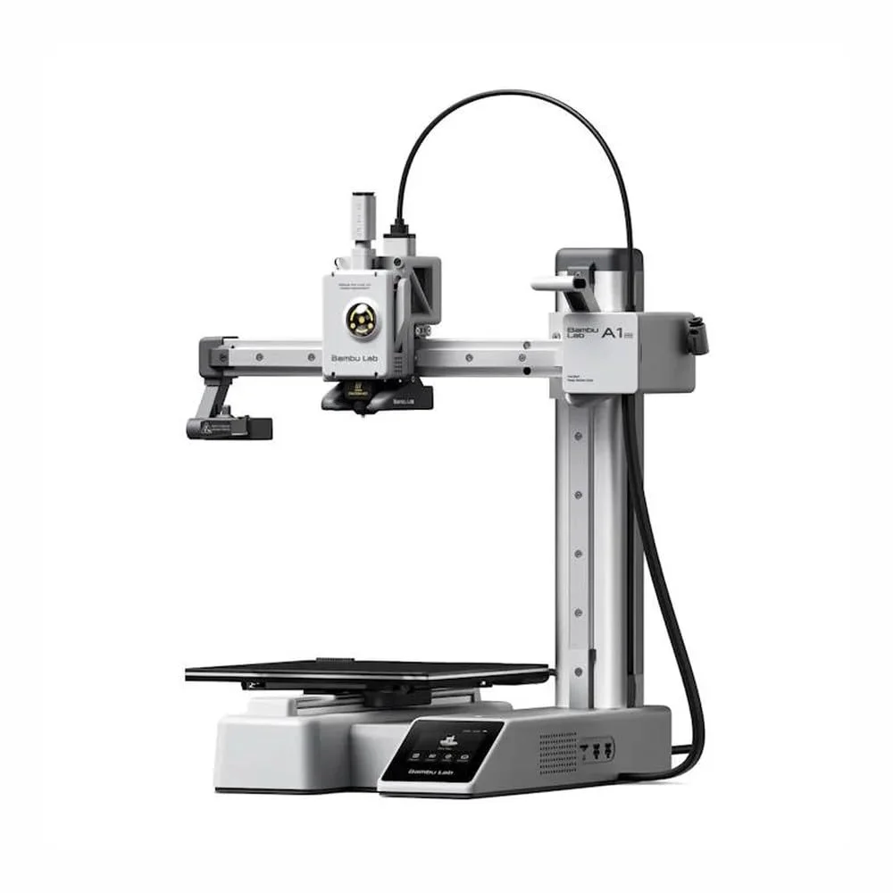
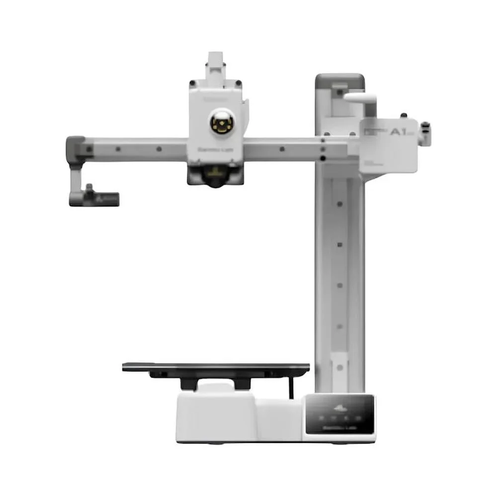
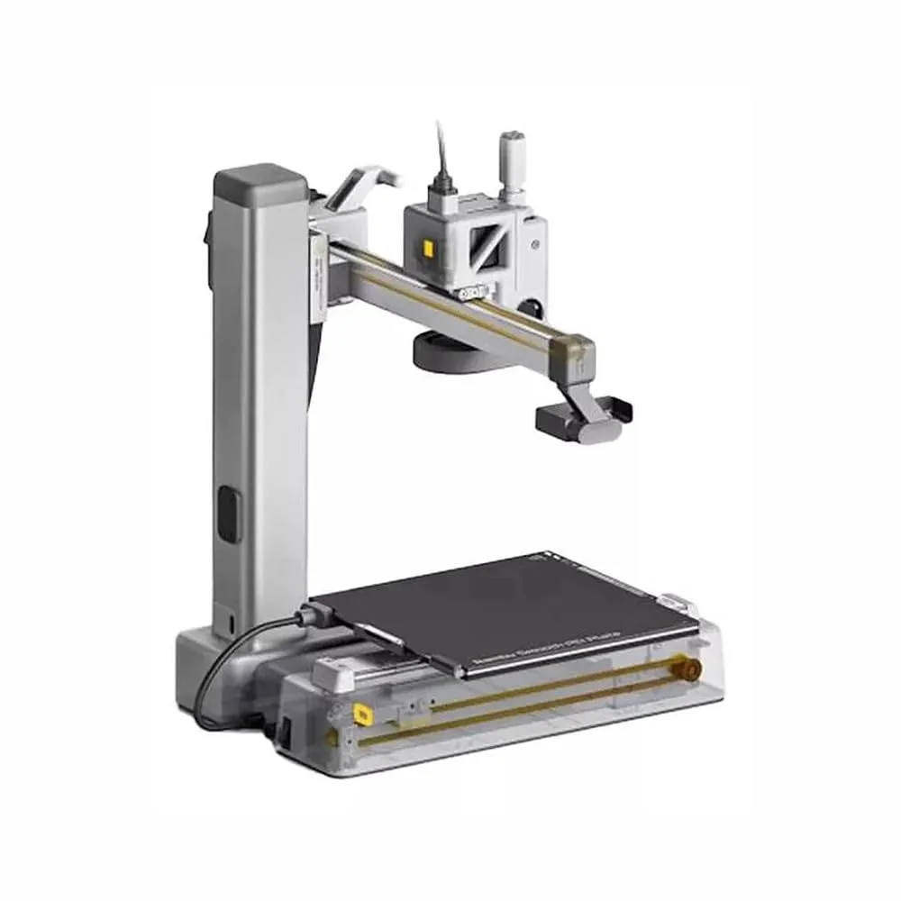
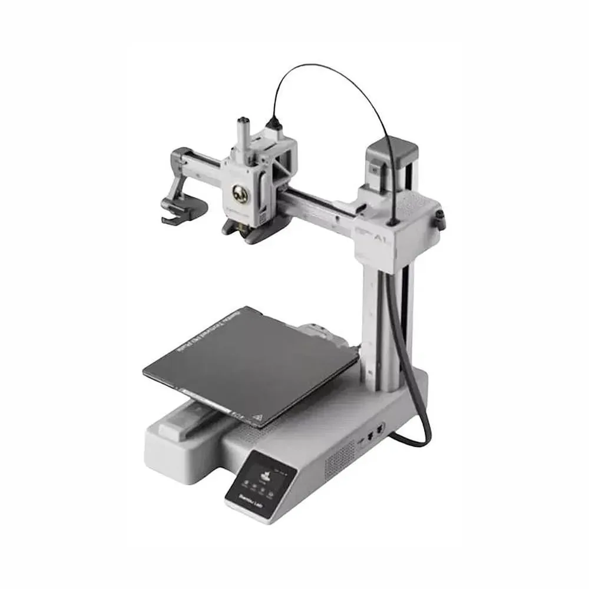
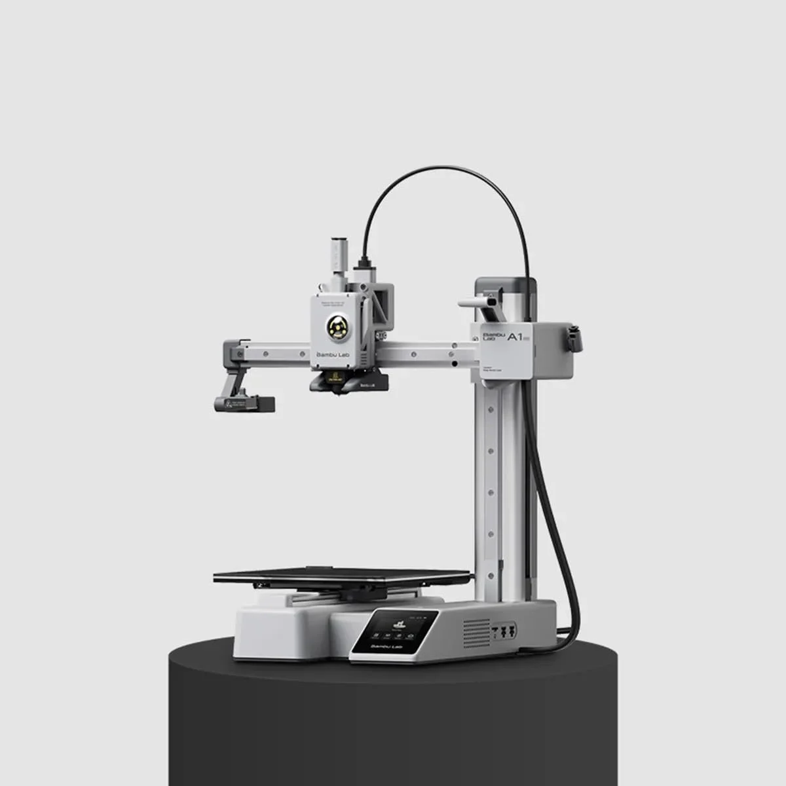

Bambu Lab
Bambu Lab A1 Mini
Consulta el precio actual en Amazon.
Valoración del editor
Puntuaciones editoriales de 0 a 10, comparables entre productos del mismo tipo. No son una puntuación oficial de Amazon.
Ficha técnica
General
| Tipo | FDM |
|---|---|
| Auto-nivelado | Sí |
| Temp. máx. cama | 80 °C |
| Velocidad máxima | 500 mm/s |
| Extrusor | directo |
| Pantalla | Sí |
| Diámetro de filamento | 1.75 mm |
| Nivel de ruido | 48 dB |
| Garantía | 12 meses |
Dimensiones
| Cama X | 180 mm |
|---|---|
| Cama Y | 180 mm |
| Cama Z (altura) | 180 mm |
| Peso | 5.5 kg |
Otros datos
| Aceleración máxima | 10.000 mm/s² |
|---|---|
| Calibración automática | Offset Z, nivelación de cama, resonancia de vibraciones y presión de boquilla, antes de cada impresión |
| Monitorización de correas | Tensión de correa por frecuencia de vibración, aviso automático si está floja |
| Carga/descarga de filamento | Automática, sin ajuste manual |
| AMS Lite | Accesorio opcional (no incluido) para impresión multicolor de hasta 4 colores |
| Pantalla | Táctil de 2,4" |
| Materiales compatibles | PLA, PETG, TPU, PVA |
| Peso y dimensiones de envío | 8,03 kg — 34,7 × 36,5 × 31,5 cm (según ficha de Amazon, incluye caja/accesorios) |
| Fuente de las especificaciones no confirmadas por Amazon | Nivel de ruido y garantía tomados de la web/wiki oficial de Bambu Lab (bambulab.com), no de esta ficha de Amazon |
| Producto en Amazon.es desde | 13 noviembre 2025 |
La Bambu Lab A1 Mini es la puerta de entrada de Bambu Lab a la impresión 3D, y hereda buena parte de la ingeniería de sus hermanas mayores en un formato más compacto y accesible. Todo el proceso de calibración —offset del eje Z, nivelación de la cama, resonancia por vibraciones y presión de la boquilla— se ejecuta en automático antes de cada impresión, y el sistema incluso vigila la tensión de las correas y avisa si hace falta tensarlas. El resultado, según las reseñas recogidas, es una impresora que se prepara para imprimir en unos 20 minutos y que después no exige el nivel de trasteo de un kit FDM tradicional.
Su volumen de impresión de 180×180×180 mm es notablemente menor que el de las impresoras de entrada tipo Ender-3 (220×220×250 mm), así que no es la opción si el objetivo son piezas grandes; a cambio, la velocidad de hasta 500 mm/s la sitúa entre las FDM más rápidas de su categoría, y admite PLA, PETG, TPU y PVA sin cambiar de hotend. El sistema AMS Lite (accesorio opcional, no incluido) añade impresión multicolor de hasta 4 colores para quien quiera ampliarla más adelante.
Con 4,7 sobre 5 y 227 valoraciones, las reseñas destacan sobre todo la facilidad de uso («prácticamente sacarla de la caja e imprimir») más que detalles técnicos concretos; el precio de venta en Amazon.es no se pudo confirmar en el momento de esta captura (ver aviso de precio).
- Calibración totalmente automática (Z, nivelación, vibraciones, tensión de correas): mínima puesta a punto manual
- Velocidad de hasta 500 mm/s, de las más altas de su categoría
- Carga y descarga de filamento sin intervención manual
- 4,7/5 con 227 reseñas, sentimiento muy positivo y consistente en varios idiomas
- Ampliable a impresión multicolor con el AMS Lite (accesorio opcional)
- Volumen de impresión reducido (180×180×180 mm), notablemente menor que impresoras de entrada como la Ender-3 V3 SE
- El AMS Lite para multicolor no viene incluido, es un accesorio aparte
- Precio en Amazon.es no confirmado en esta captura (ver aviso de precio geobloqueado)
- Muestra de reseñas más pequeña (227) que otros modelos del catálogo, aunque muy consistente
Ideal para: Quien quiere una impresora fácil de calibrar y mantener, con menos trasteo que un kit tradicional, y no necesita imprimir piezas grandes.
Qué dicen los compradores
4,7 sobre 5 con 227 valoraciones, la mayoría de 5 estrellas y en varios idiomas (español, portugués, italiano, francés). El comentario más repetido es la facilidad de uso: varias reseñas la describen como lista para imprimir nada más sacarla de la caja. Muestra más pequeña que otros productos del catálogo, pero sin reseñas negativas relevantes entre las 6 recogidas.
Reseñas mostradas en Amazon en el momento de la captura.
Como Afiliados de Amazon, obtenemos ingresos por las compras que cumplen los requisitos aplicables. «Amazon» y el logo de Amazon son marcas de Amazon.com, Inc. o sus filiales.